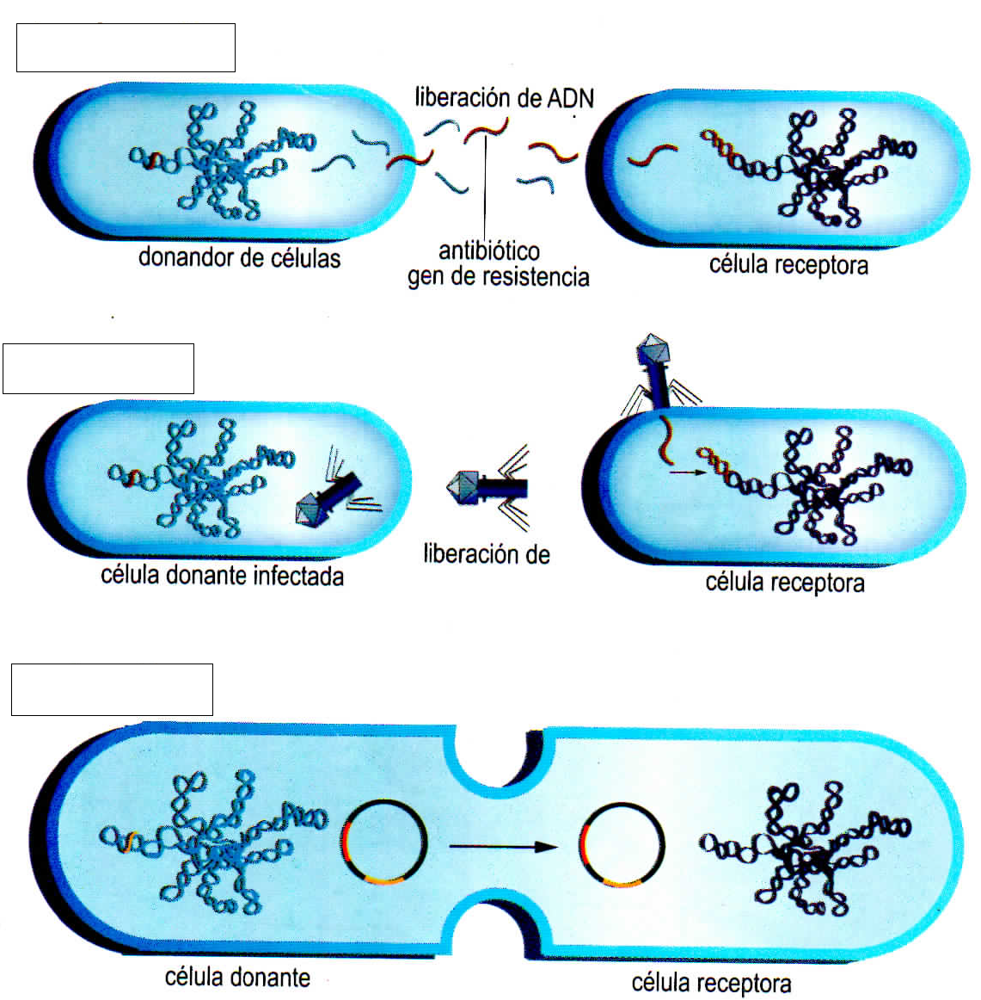
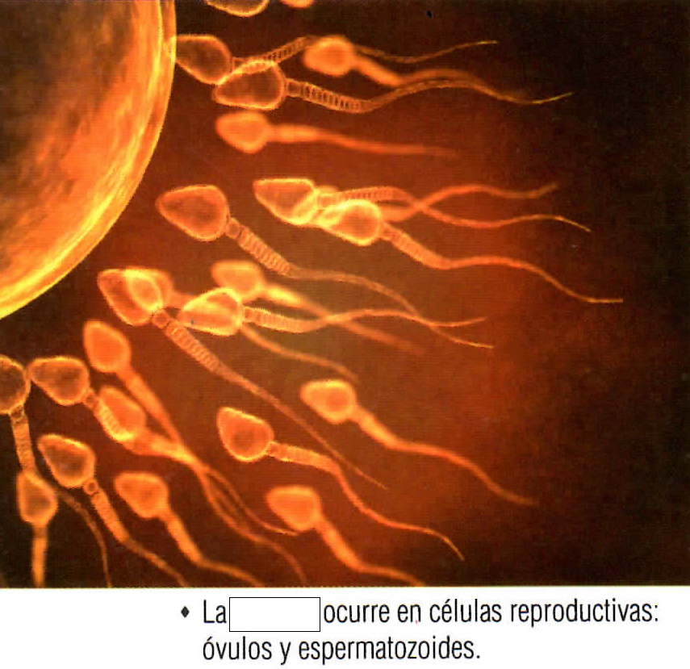

¿Qué es la división celular?

¿Cuál es la importancia de la división celular en organismos Eucariontes?

Evaluaciónes Séptimo Grado
Primera Unidad
Preguntas con Imagen
¿Qué es la división celular?
¿Cuál es la importancia de la división celular en organismos Eucariontes?
Preguntas de opción múltiple
¿Qué es la división celular?
¿Cuál es la importancia de la división celular en organismos Eucariontes?